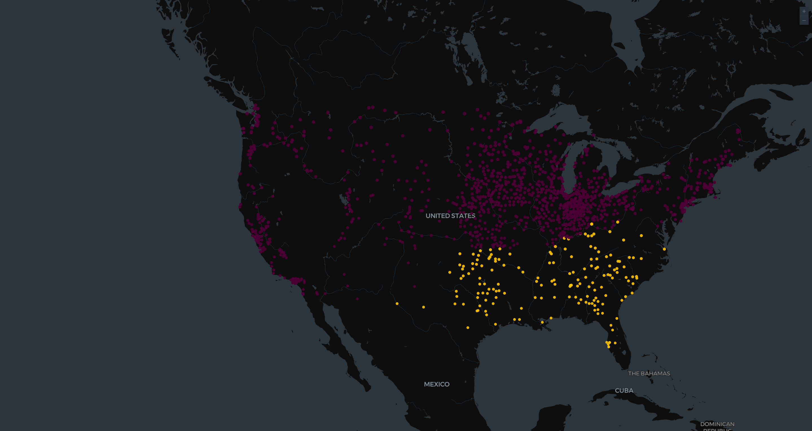

Week 4 · Weekly Project · Due August 9, 2026
Where the Libraries Went: Carnegie Grants and the Geography of Reading
Why Kepler.gl this week
Kepler.gl is a geospatial analysis tool that runs in the browser. A user loads a table containing latitude and longitude columns, and Kepler renders those rows as a map layer that can be filtered, colored by any field, and animated across a time column. It was built for large point datasets, which is the reason I selected it over the other mapping tools covered this week.
The distinction matters for this particular question. StoryMap JS is designed for a narrative sequence of locations, where a reader is walked through a small number of places in a fixed order. ArcGIS StoryMaps works similarly, combining maps with written sections. Both are excellent for an argument that is told place by place. My dataset contains more than a thousand points and the argument is about their distribution rather than about any individual library, so a tool that renders the whole set at once is the appropriate choice.
The data
Between 1890 and 1921, Andrew Carnegie funded public library buildings across the United States through a grant program administered by what became the Carnegie Corporation of New York. The dataset I am using is the Corporation's own record of those grants, which lists every award with its city, state, year, dollar amount, and coordinates. It contains 1,522 rows in total, of which 1,419 are grants to communities for public libraries and 103 are grants to colleges and universities. I am using the 1,419 public grants, because the academic awards went to institutions rather than to towns and answer a different question.
As in Week 3, I am using the complete set rather than a sample. This is the entire population of public grants, spanning 49 states, and it totals $45,874,737. Using all of it removes the objection that a pattern might be an artifact of which libraries I chose to include. It also lets me check the data against an independent source: the count of 1,419 public grants matches the figure published on Wikipedia's overview of Carnegie libraries, and the dollar total agrees with the commonly cited figure to within about two hundredths of a percent.
This topic follows directly from Week 2. That project charted literacy rates climbing over two centuries, which is a measurement of an outcome. This one looks at a piece of the infrastructure that produced the outcome. A literacy rate is an abstraction; a library is a building that a specific town had to request, site, and agree to fund. Mapping the buildings shows where the capacity to read was actually being built, and, more revealingly, where it was not.
What the map shows
The first thing visible in the map below is how much of the country the dots draw by themselves. The density across the Midwest and Northeast traces the shape of the settled United States, which is itself a finding about where institutional life was concentrated in this period. Each point is one community that received a grant, and the two colors separate the Southern states from everywhere else.

The second thing visible is the gap. The Southern states are close to empty. Counting the grants makes the disparity precise. The twelve Midwestern states received 794 public library grants, while the fourteen Southern states received 169. That is a ratio of nearly five to one. Indiana alone received 156 grants, which is very nearly as many as the entire South combined. Virginia received two. Maryland received one.
The explanation is in the terms of the program rather than in any stated regional preference. Carnegie's grants were not gifts of a finished building. Under the formula his office applied, a community had to request the money, provide the building site itself, and pledge annual public support equal to about ten percent of the grant, funded by local taxes. The map therefore does not record where libraries were wanted. It records where a town possessed the tax base, the municipal machinery, and the political consensus to commit public money in perpetuity. In the post Reconstruction South, where public finance was weaker and local government was often unwilling to fund shared civic institutions, far fewer communities could or would meet those conditions.
This is worth stating carefully, because the map is easy to misread. A sparse region does not mean the people there read less. It means the funding mechanism required something those communities did not have. And the libraries that were built in the South were frequently segregated, so even a dot on the map does not indicate that a town's whole population gained access to it. The visualization shows the distribution of a particular kind of public investment, and that is a narrower claim than a map of American reading.
First reflections on the tool
Kepler.gl handles this volume of data easily and its filtering is genuinely useful: restricting the year range shows the program spreading outward over three decades rather than appearing all at once. The difficulty is that a map is unusually persuasive. A field of dots looks like an objective record of where libraries existed, when it is actually a record of which grant applications succeeded. The tool renders the data faithfully and says nothing about what generated it.
That is the same problem I ran into with Tableau in Week 2 and Voyant in Week 3, and by now it seems less like a limitation of any one tool than the basic condition of working this way. Each of these programs turns a table into something that looks like a conclusion. The interpretive work of asking what the table actually measures does not get easier as the visualizations get better, and with maps it may get harder, because a map carries an authority that a bar chart does not.